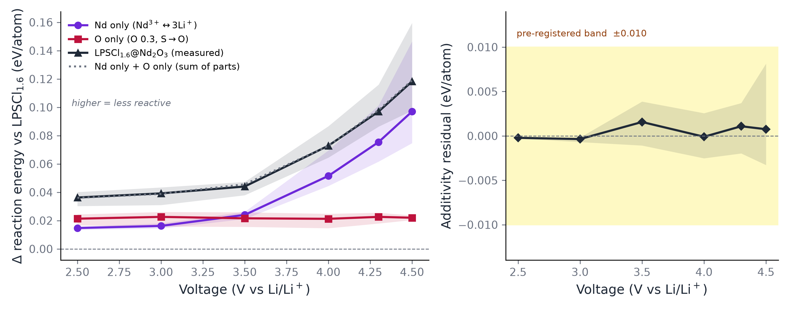
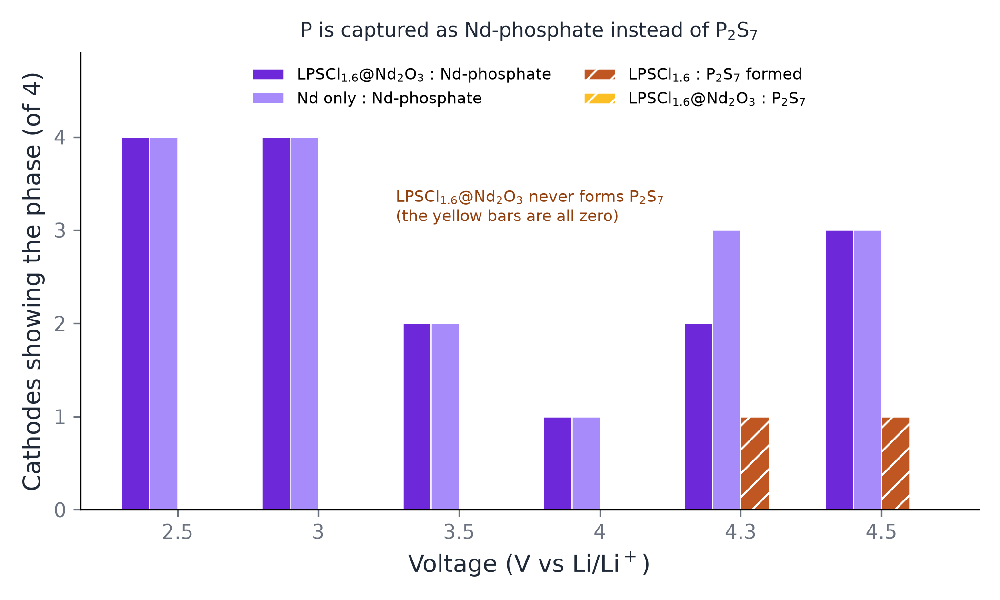

배경 지식 없이 읽는 설명을 같이 담았다
Nd 는 인산염 싱크다
고전압에서 Nd 가 하는 일 — CEI 계면 반응성의 Nd/O 분해
고체 전해질을 양극에 붙여 높은 전압까지 충전하면 둘이 닿은 면에서 반응이 일어나 새로운 층이 생긴다. 그 층이 잘 생기면 더 이상의 반응을 막아 주고, 잘못 생기면 전지가 계속 갉힌다. 이 페이지는 전해질에 Nd 와 O 를 넣으면 그 층이 어떻게 달라지는가를 계산으로 따진 기록이다. 실험은 하나도 없고, 전부 어떤 상이 생기는 것이 에너지상 이로운가를 데이터베이스 위에서 푼 것이다.
질문 — 이 효과가 Nd 특화인가, 아니면 O 효과인가?
답 — 둘 다이고, 서로 독립이고, 전압에 따라 주역이 바뀐다. 저전압에선 O 가 더 이롭고, 고전압에선 Nd 가 압도적이다. 둘을 같이 넣으면 정확히 합만큼 좋아진다 — 시너지도 상쇄도 없다.
기전 — Nd 는 더 좋은 인산염을 만드는 게 아니라 Li 를 안 쓰는 인산염 경로를 연다 (NdPO₄ 는 P 하나당 Li 0 개, Li₃PO₄ 는 3 개). 고전압이 Li 를 빼가면서 그 경로의 값어치가 커진다 — §3.
1. 분해 — 대조 조성 둘을 추가해서 갈랐다
익숙한 것에 빗대면 블록 탑에서 블록을 빼는 것이다. 전지를 충전하면 전해질에서 Li 가 양극 쪽으로 빠져나간다 — 그러니까 전압을 올린다는 건 Li 를 더 많이 빼낸다는 뜻이다. 몇 개 빠져도 탑은 버티지만 어느 선을 넘으면 무너지는 모양 자체가 달라진다. 아래 전압 여섯 개는 "Li 를 이만큼 뺐을 때 무엇으로 무너지나" 를 여섯 번 물어본 것이고, 값이 위로 갈수록 덜 무너진다는 뜻이다.
기존 LPSCl1.6@Nd₂O₃ 는 Nd 치환과 O 치환이 같이 바뀌어서 둘을 못 갈랐다. 전하중성을 맞춘 대조 조성 둘을 추가해 축을 분리했다.
| 이름 | 조성 | Nd | O | 전하 |
|---|---|---|---|---|
| LPSCl1.6 (기준) | Li5.4 P S4.4 Cl1.6 | 0 | 0 | 0 ✓ |
| LPSOCl1.6 | Li5.4 P S4.2 O0.2 Cl1.6 | 0 | 0.2 | 0 ✓ |
| Nd only (신규) | Li4.8 Nd0.2 P S4.4 Cl1.6 | 0.2 | 0 | 0 ✓ |
| O 0.3 only (신규) | Li5.4 P S4.1 O0.3 Cl1.6 | 0 | 0.3 | 0 ✓ |
| LPSCl1.6@Nd₂O₃ | Li4.8 Nd0.2 P S4.1 O0.3 Cl1.6 | 0.2 | 0.3 | 0 ✓ |
⚠ 원자료(JSON·CSV)의 열 이름은 내부 코드명 그대로다 —
comp1=LPSCl · modelc=LPSCl1.6 · lpsocl=LPSOCl1.6 ·
modelc_nd=LPSCl1.6@Nd₂O₃ · nd_only · o_only_03.
기계 경로라 바꾸지 않는다(바꾸면 원장·게이트가 끊긴다). 사람이 읽는 이름만 이 문서에서 바꿨다.

왼쪽 그림에서 선이 위에 있을수록 좋은 전해질이다. 세로축은 무도핑 기준으로 얼마나 덜 반응하느냐라서, 0 이 무도핑이고 위로 갈수록 덜 반응한다.
빨강(O 만)은 전압이 올라가도 거의 평평하다 — 2.5 V 에서든 4.5 V 에서든 이득이 같다. 보라(Nd 만)는 3.5 V 까지는 빨강보다 아래인데 그 뒤로 급격히 올라가 4.5 V 에서는 빨강의 4 배가 넘는다. 저전압에서는 O 가, 고전압에서는 Nd 가 주역이라는 말이 이 교차에서 나온다.
가장 중요한 것은 점선과 검은 선이 겹친다는 점이다. 점선은 "Nd 효과와 O 효과를 그냥 더한 값", 검은 선은 "둘을 실제로 같이 넣고 계산한 값" 이다. 둘이 겹친다는 건 서로 방해하지도 도와주지도 않는다는 뜻이다.
오른쪽 그림이 그 겹침을 확대한 것이다. 세로축은 (Nd 효과 + O 효과) − (둘 다) 이고, 0 이면 완전 가법적이다. 노란 띠는 결과를 보기 전에 정해 놓은 합격선(±0.010)이고, 측정된 잔차는 그 띠의 1/20 수준이다. 문턱을 나중에 정했다면 이 그림은 아무 말도 못 한다 — 먼저 박았기 때문에 판정이 된다.
음영은 양극 4 종(LiCoO₂·LiNiO₂·LiMnO₂·NMC811)의 흩어진 범위다. 선은 그 넷의 평균이다.
| V vs Li/Li⁺ | Δ Nd only | Δ O only | 합 | 실측 (둘 다) | 잔차 |
|---|---|---|---|---|---|
| 2.5 | +0.0147 | +0.0213 | +0.0361 | +0.0363 | −0.0002 |
| 3 | +0.0162 | +0.0226 | +0.0388 | +0.0392 | −0.0004 |
| 3.5 | +0.0240 | +0.0216 | +0.0456 | +0.0441 | +0.0016 |
| 4 | +0.0515 | +0.0212 | +0.0728 | +0.0729 | −0.0001 |
| 4.3 | +0.0754 | +0.0226 | +0.0981 | +0.0970 | +0.0011 |
| 4.5 | +0.0970 | +0.0220 | +0.1190 | +0.1183 | +0.0008 |
세 판정 모두 통과 (문턱은 실행 전에 봉인):
- R1 가법성 — 평균 잔차 +0.0005, 문턱 0.010 의 1/20. 범위 −0.0033 ~ +0.0081.
- R3 O 선형성 — O 0.2 에서 0.3 으로 선형외삽 +0.0218 vs 실측 +0.0219. 차이 0.0001.
- R4 전압 의존 — O 는 3 % 변화, Nd 는 6.6 배. 교차점 약 3 V.
2. 왜 고전압에서 Nd 인가 — 산물이 말한다
hull 은 무엇이 생기는지를 말하지 왜 를 말하지 않는다. 그런데 산물 목록에 뚜렷한 패턴이 있다.

세로축은 에너지가 아니라 개수다 — 양극 4 종 중 몇 개에서 그 물질이 나왔나. 그래서 최대가 4 다.
빗금 친 주황 막대가 P₂S₇ 다. 4.3 V 부터 무도핑 계에서 올라온다 — 전압이 오르면 P–S 결합이 끊어지고 풀려난 P 가 갈 곳이 필요한데, Nd 가 없으면 P₂S₇ 로 간다는 뜻이다. 빗금 친 노랑 막대(Nd 계의 P₂S₇)는 전 구간에서 0 이다.
대신 Nd 계에서는 보라 계열 막대(Nd 인산염)가 올라온다. 같은 P 가 다른 곳으로 간 것이다.
⚠ 3.5–4.0 V 에서 Nd 인산염 막대가 잠깐 낮아지는데 그건 Nd 가 쉬는 게 아니라, 그 구간에서 전이금속 인산염(Mn₂P₂O₇ · Ni(PO₃)₂)이 대신 P 를 가져가기 때문이다.
⚠ 이 그림은 가장 깊은 꺾임 하나의 산물만 센 것이다. 나머지 자리까지 본 것이 Fig. 5 고, 거기서는 비율이 훨씬 높게 나온다(69–75 %).
4.5 V · LiCoO₂ 에서 반응식을 나란히 놓으면 차이가 한눈에 보인다.
가설 — Nd³⁺ 는 강한 인산염 형성체다
- 저전압에선 P 가 아직 PS₄ 골격에 붙어 있다. Nd 가 할 일이 없다.
- 전압이 오르면 S 가 산화되고 P–S 가 끊어진다. 풀려난 P 가 갈 곳이 필요하다.
- Nd 가 없으면 → P₂S₇ (P–S, 덜 안정).
Nd 가 있으면 → NdPO₄ · Nd(PO₃)₃ · NdP₅O₁₄ · LiNd(PO₃)₄. - 풀려나는 P 의 양이 전압과 함께 늘어나므로 Nd 의 이득도 전압과 함께 커진다.
⛔ 이 가설의 3 번은 아래 §3 에서 반쯤 반증됐다. "희토류 인산염이 더 안정하다" 는 Li₃PO₄ 기준으로는 틀렸다. 살아남은 것은 "P₂S₇ 보다 훨씬 안정하다" 쪽이고, Nd 가 이기는 진짜 이유는 따로 있다 — Li 를 안 쓴다. 이 카드를 여기 그대로 둔 것은 어디서 틀렸는지 보이게 하려는 것이다.
가법성도 이걸로 설명된다 — O 는 격자 안에서 이미 붙어 있는 P 를 미리 인산염화하고(그래서 전압 무관한 상수 오프셋), Nd 는 풀려난 P 를 사후에 잡는다. 다른 P 풀에 작용하니 서로 간섭하지 않는다.
이 논리는 Xiao 2020 리뷰의 Li₃PO₄ 싱크(생성E −2.767 eV/atom)와 같은 구조다. 다만 싱크가 Li₃PO₄ 가 아니라 희토류 인산염이다.
3. 검증 — 그리고 가설의 절반이 틀렸다
§2 의 가설을 재려고 같은 hull 에서 균형반응 10 개를 돌렸다
(ComputedReaction, 계수는 도구가 잡는다). 검산 고리 둘이 닫힌다 —
③−④ = ⑤−⑥ = ① = +1.5035, 소수 4 자리까지.
⛔ 철회 — "NdPO₄ 가 Li₃PO₄ 보다 깊은 P 싱크다" 는 틀렸다. Li₃PO₄ + ½Nd₂O₃ → NdPO₄ + 1.5 Li₂O 가 +1.5035 eV/P 로 양수다. 생성에너지 표도 같은 말을 한다 — P 하나당 Li₃PO₄ 가 더 깊다.
그런데 Li 예산을 낮추면 부호가 뒤집힌다
같은 형식(<공여상> + ½Nd₂O₃ → NdPO₄ + Li₂O)에서 P 하나당 Li 개수만 바꾸면 완전 단조다.
| P 공여상 | Li/P | ΔE (eV/P) | 균형반응 | 치환 |
|---|---|---|---|---|
| LiNd(PO3)4 | 0.25 | -1.2156 | 0.25 LiNd(PO3)4 + 0.375 Nd2O3 -> NdPO4 + 0.125 Li2O | Nd→Nd |
| LiPO3 | 1 | -0.8239 | LiPO3 + 0.5 Nd2O3 -> NdPO4 + 0.5 Li2O | Li→Nd |
| Li4P2O7 | 2 | +0.4030 | 0.5 Li4P2O7 + 0.5 Nd2O3 -> NdPO4 + Li2O | Li→Nd |
| Li3PO4 | 3 | +1.5035 | Li3PO4 + 0.5 Nd2O3 -> NdPO4 + 1.5 Li2O | Li→Nd |

왼쪽 그림의 가로축은 "P 하나를 붙잡는 데 Li 를 몇 개 쓰는 상인가" 이고, 세로축은 "그 상에서 Nd 가 P 를 뺏어 가는 것이 이로운가" 다. 세로축이 0 보다 아래면 Nd 가 이긴다. 네 점이 완전히 단조라서, Li 를 적게 쓰는 상일수록 Nd 가 유리해진다는 관계가 그대로 보인다.
점선으로 표시한 Li/P ≈ 1.67 가 부호가 뒤집히는 자리다. 이 값은 전체 네 점에 직선을 맞춘 것이 아니라, 부호가 갈리는 바로 옆 두 점(Li/P 1 과 2)만 이어서 얻었다 — 점이 셋뿐인데 전역 피팅을 하면 없는 정밀도를 만들어 낸다.
빈 사각형 LiNd(PO₃)₄ 는 같은 축에 찍혀 있지만 기울기 계산에서 뺐다. 나머지 셋은 Li 자리를 Nd 가 대신하는 반응인데 이것만 이미 Nd 를 품고 있어 Nd→Nd 라, 같은 기울기 위에 있다고 볼 근거가 없다.
오른쪽 그림은 맥락이다. 막대가 아래로 길수록 그 상이 안정하다. 왼쪽 세 묶음(Nd 인산염 · Li 인산염 · 티오인산염)을 보면 P₂S₇ 만 유독 짧다 — 인산염들의 1/5 수준이다. "O 만 있으면 P 는 어느 쪽이든 인산염으로 간다" 가 여기서 나온다.
⚠ 오른쪽 그림의 E_f/P 열(표에만 있음)은 반응에너지가 아니다.
O:P 비가 다른 상을 한 줄에 놓으면 P–O 결합 수 차이를 P 하나당으로 뭉갠다 — 순위 힌트로만 읽는다.
고쳐 쓴 기전 — Nd 는 "더 좋은 인산염을 만드는" 게 아니라 Li 를 안 쓰고 인산염을 만드는 경로를 연다. Li₃PO₄ 는 P 하나당 Li 3 개를 먹고 NdPO₄ 는 0 개다. 고전압에서 Li 가 양극으로 빠져나가면 Li 가 희소해지고, 그때 경쟁은 Li₃PO₄ 대 NdPO₄ 가 아니라 LiPO₃ 대 NdPO₄ 가 된다 — 거기선 Nd 가 -0.8239 eV/P 로 이긴다.
O 효과가 전압에 평평하고(인산염을 가능하게만 함) Nd 효과가 6.6 배 커지는 것(Li 가 희소해질수록 값어치가 커짐)이 이 그림에 그대로 맞는다.
버려지는 Li 가 어디로 가느냐도 부호를 바꾼다
P 쪽이 똑같고 밀려난 Li 3 개의 행선지만 다른 두 반응:
2.01 eV/P 차이가 통째로 Li₂O 대 LiCl 이다. 아지로다이트에는 f.u. 당 Cl 이 1.6 개 있고, §B 의 hull 이 고른 산물에 실제로 NdPO₄ + 0.77 LiCl 이 같이 나온다 — 작동하는 채널은 LiCl 쪽이다.
살아남은 절반 — P₂S₇ 는 형편없는 P 싱크다
둘 다 −5 eV/P 안팎으로 압도적이다. O 만 있으면 P 는 어느 쪽이든 인산염으로 간다 — 이것이 O 효과가 전압에 평평한 이유고, §2 가설에서 살아남은 부분이다.
| 상 | 묶음 | E_f (eV/atom) | E_f (eV/P) | hull 거리 |
|---|---|---|---|---|
| NdPO4 | Nd phosphate | -3.4502 | -20.70 | 0.0000 |
| Nd(PO3)3 | Nd phosphate | -2.9879 | -12.95 | 0.0000 |
| NdP5O14 | Nd phosphate | -2.8238 | -11.30 | 0.0000 |
| LiNd(PO3)4 | Nd phosphate | -2.9263 | -13.17 | 0.0000 |
| Li3PO4 | Li phosphate | -2.7535 | -22.03 | 0.0000 |
| Li4P2O7 | Li phosphate | -2.7439 | -17.84 | 0.0000 |
| LiPO3 | Li phosphate | -2.7032 | -13.52 | 0.0000 |
| P2O5 | Li phosphate | -2.4389 | -8.54 | 0.0000 |
| Li3PS4 | thiophosphate | -1.1825 | -9.46 | 0.0000 |
| P2S7 | thiophosphate | -0.5120 | -2.30 | 0.0000 |
| P2S5 | thiophosphate | -0.5193 | -1.82 | 0.0000 |
| Nd2O3 | Nd non-phosphate | -3.7816 | — | 0.0000 |
| NdCl3 | Nd non-phosphate | -2.7479 | — | 0.0000 |
| Nd2S3 | Nd non-phosphate | -2.3611 | — | 0.0000 |
| NdOCl | Nd non-phosphate | -3.2665 | — | 0.0556 |
⚠ E_f/P 열은 반응에너지가 아니다. O:P 비가 다른 상을 한 줄에 놓으면 P–O 결합 수 차이를 P 하나당으로 뭉갠다 — 순위 힌트다. 판정은 위 균형반응이 한다. 반응물·생성물 집합도 사람이 고른 것이고, hull 이 고르는 판정은 §4 쪽이다.
4. 전 혼합범위 스캔 — 최소점 하나가 아니라 곡선 전체
지금까지 쓴 값은 가장 깊은 kink 하나였다. 도구가 나머지를 계산해 놓고 버리고 있었다 — 이제 전 kink 를 남긴다(조건당 16–18 개). 그러면 Richards/Ong 식 반응에너지 vs 혼합비 x 곡선이 통째로 그려진다.

곡선 하나가 전압 하나다. 밝은 노랑이 2.5 V, 진한 적갈이 4.5 V. 아래로 내려갈수록 반응이 잘 일어난다는 뜻이라, 곡선이 얕을수록 좋은 전해질이다.
가로축 x 는 섞인 비율이다 — 왼쪽 끝은 양극만, 오른쪽 끝은 전해질만, 가운데가 반반. 곡선이 매끈한 곡선이 아니라 꺾은선인 것이 핵심이다. 꺾이는 점마다 생기는 물질 조합이 통째로 바뀐다. ▽ 는 그중 제일 깊은 자리, 즉 제일 심하게 반응하는 비율이다 — 지금까지 우리가 인용해 온 값이 그 점 하나였다.
보라색 빈 동그라미가 이 그림에서 제일 할 말이 많은 표시다. 그 자리에서 나오는 물질 중에 Nd 인산염이 있다는 뜻인데, 아래 줄 가운데·오른쪽(Nd 있는 계) 패널만 빼곡하고 나머지 넷은 하나도 없다. 특정 비율에서만 잠깐 나오는 게 아니라 x 축 거의 전체에 걸쳐 나온다.
⚠ 곡선 아래 넓이를 "총 반응성" 으로 인용하지 않는다. x 는 섞인 비율일 뿐, 실제 계면에서 어느 비율이 실현되는지는 이 계산이 말하지 않는다. 쓸 수 있는 것은 같은 격자 위에서의 순서다.
| 전해질 | 최소 깊이 (4.5 V) | ∫E dx (4.5 V) | Nd 인산염 kink (전 조건) |
|---|---|---|---|
| LPSCl | -1.7214 | -1.4160 | 0/440 = 0% |
| LPSCl$_{1.6}$ | -1.4979 | -1.2850 | 0/447 = 0% |
| LPSOCl$_{1.6}$ | -1.4833 | -1.2717 | 0/469 = 0% |
| O 0.3 only | -1.4759 | -1.2649 | 0/466 = 0% |
| Nd only | -1.4009 | -1.2181 | 357/516 = 69% |
| LPSCl$_{1.6}$@Nd$_2$O$_3$ | -1.3796 | -1.1989 | 384/515 = 75% |
양극 4 종 평균이다. 세 지표가 같은 순서를 준다 — 최소 깊이·곡선 아래 넓이·(앞 절의) 최소 kink 값. 제일 얕은 것이 LPSCl$_{1.6}$@Nd$_2$O$_3$ (-1.3796 eV/atom).
가장 깨끗한 신호 — Nd 인산염이 나오는 kink 비율이 이분법이다. Nd 없는 넷은 0 %(전 조건 1,822 kink 중 0 개), Nd 있는 둘은 69–75 %. 최소점 하나만 보면 안 보이던 것이다 — Nd 인산염은 특정 혼합비에서만 나오는 게 아니라 x 축 거의 전체에 걸쳐 나온다.
⚠ ∫E dx 를 '총 반응성' 으로 인용하지 않는다. x 는 혼합비일 뿐 실제 계면에서 어느 x 가 실현되는지는 이 계산이 말하지 않는다. 여기서 쓸 수 있는 것은 같은 격자 위에서의 순서다.
5. 갭 단계(§C)는 무엇을 재나 — 목록을 먼저 박았다
§4 가 kink 를 전부 남기면서 산물 집합이 36 → 97 종이 됐다. 즉 갭 단계의 대상 목록이 어제와 다른 자료 위에 서 있다. 어느 쪽을 쓸지는 갭을 한 줄도 돌리기 전에 정해야 한다.
| 구분 | 종수 | 그중 전이금속 |
|---|---|---|
| 양쪽 다 나옴 (도핑 무관) | 79 | 63 |
| Nd 계에만 | 14 | 5 |
| 무Nd 계에만 | 4 | 3 |
97 종 중 79 종이 도핑 여부와 무관하게 똑같이 나온다. 그 79 종의 갭은 아무리 정확히 재도 "Nd/O 도핑이 부동태에 도움이 되나" 에 답을 못 한다 — 양쪽 표에 같은 숫자가 두 번 적힐 뿐이다.
그래서 대상 = 판별종 ∧ 전이금속 비포함 = 10 종
| 상 | 어느 쪽에만 | 전압 커버리지 | 이미 측정된 갭 |
|---|---|---|---|
| NdPO4 | Nd 계에만 | 6/6 | — |
| NdCl3 | Nd 계에만 | 5/6 | — |
| Nd2(SO4)3 | Nd 계에만 | 4/6 | — |
| Nd(PO3)3 | Nd 계에만 | 3/6 | — |
| Nd3PO7 | Nd 계에만 | 3/6 | — |
| NdP5O14 | Nd 계에만 | 3/6 | — |
| P2O5 | 무Nd 계에만 | 3/6 | — |
| LiNd(PO3)4 | Nd 계에만 | 2/6 | — |
| Nd2O3 | Nd 계에만 | 2/6 | 3.9479 eV |
| NdPS4 | Nd 계에만 | 1/6 | — |
1 종은 이미 있다 (Nd2O3, frozen-4f, 2026-08-12 마감). ⇒ 신규는 9 종. 전압 6 구간 전부에 나오는 것은 NdPO4 하나뿐이라, 그것을 파일럿으로 먼저 완주하고 실측 벽시계로 나머지를 추정한다.
⛔ 무엇을 왜 뺐는지는 예산이 아니라 논증이다.
- 79 종 — 판별력이 없어서 뺀다. 공짜로 줘도 이 질문엔 못 쓴다.
- 전이금속 판별종 8 종 — ① PBE 가 모트 절연체 갭을 크게 과소평가한다 (문헌 상식, 우리 측정 아님) ② 자기 배열마다 갭이 달라 스칼라 보고량이 정의되지 않는다. 카드 판정 기준 그대로다 — "admissible state 가 여럿인데 선택·집계 규칙이 없으면 스칼라 보고량은 정의되지 않는다."
- ⚠ 이건 해결이 아니라 회피다. 나중에 "CEI 전체가 절연이다" 를 말하고 싶어지면 이 문제를 다시 마주친다.
결과 보기 전에 박은 문턱
- G1 — 차이라고 부를 최소폭 0.30 eV. 근거는 관측된 재현 폭 둘: comp1 2.066 vs 재계산 2.0656 (같은 방법) · Nd₂O₃ 우리 3.9479 vs MP 3.8118 (다른 방법, Δ0.136). 큰 쪽의 약 2 배. ⚠ 이 계의 잡음에서 유도한 값이 아니다.
- G2 — Nd 판별종의 최소 갭 vs P₂O₅ 갭. 0.30 eV 이상 작으면 "Nd 는 더 새는 층을 추가한다", 반대면 "Nd 층도 절연", 그 미만이면 "구분되지 않는다" (0 이라고 하지 않는다).
- G3 — 이것이 Nd/O 부동태 카드 §5-c 의 "Nd 가 O 의 이득을 상쇄한다" 가설에 대한 갭 축 직접 판정이다. 구동력 축에서는 §1 이 이미 가법성으로 기각했다.
- G4 — frozen-4f 로 갭이 0 근처면 metal 로 선언하지 않는다. `undetermined` 로 두고 blocker 를 적는다.
- G5 ⛔ — 갭으로 부동태 결론을 내지 않는다. 연속성·두께·Li⁺ 전도가 이 계산에 없다. §C 는 "이 층이 전자를 막을 성질을 갖는가" 까지만 답한다.
개정문
cathode_cei_gap_target_amendment_2026_09_16 (ratified, 결과 보기 전 봉인) ·
결정 D-2026-09-16-cathode-cei-gap-target (active).
위 종수·전압 커버리지는 이 화면이 원자료에서 다시 계산한 것이다 —
카드와 화면이 같은 JSON 을 본다.
6. 양극별 원자료

앞 두 그림은 무도핑 기준의 차이를 봤고, 이건 원래 값이다. 아래로 갈수록 반응이 잘 일어난다.
보는 법은 하나다 — 네 패널에서 선들의 위아래 순서가 같은가. 같다. 양극을 바꿔도 전해질 순서가 안 바뀐다는 뜻이고, 그래서 "이 전해질이 저 전해질보다 낫다" 를 특정 양극에 기대지 않고 말할 수 있다.
⛔ 세로축 절대값은 다른 논문 값과 나란히 놓으면 안 된다. MP 보정 눈금이 산화물(+U)과 황화물(GGA) 혼합이라 우리 계들끼리의 비교에만 쓸 수 있다.
⚠ 4.0 V 위 일부 점은 양극이 반응식에 아예 없다 — 전해질이 혼자 분해된 것이라 "계면 반응성" 이 아니다. 캡션의 6/24 · 1/24 가 그 개수다.
7. 말하면 안 되는 것
- ⛔ 반응에너지 절대값을 다른 논문 값과 나란히 놓기 — MP 보정 눈금이 산화물(+U)·황화물(GGA) 혼합이다.
- ⛔ "Nd 효과" 를 Nd 원자 단독의 효과라 쓰기 — Nd³⁺↔3Li⁺ 라 Li 공공 2개/Nd 가 묶여 있고, 전하중성 때문에 이 설계로는 못 뗀다.
- ⛔
Nd only·O 0.3 only을 실재하는 조성으로 말하기 — 만들거나 이완한 적 없는 hull 위의 조성점이다. - ⛔ 이 이득을 부동태화로 읽기 — 이건 계면 반응 구동력이지 산물의 전자 성질이 아니다. 갭 단계가 따로 답한다.
- ⛔ "NdPO₄ 가 Li₃PO₄ 보다 깊은 P 싱크다" — 철회됨 (§3). 균형반응이 +1.5035 eV/P 로 양수다. Nd 가 이기는 것은 Li 예산이 P 하나당 ~1.7 개 밑일 때이거나, 밀려난 Li 가 LiCl 로 갈 때다 — 조건을 빼고 쓰면 안 된다.
- ⛔
E_f/P열을 반응에너지처럼 쓰기 — O:P 비가 다른 상을 뭉개는 순위 힌트다. - ⛔ x-스캔의 ∫E dx 를 '총 반응성' 으로 인용하기 — 실제 계면에서 어느 x 가 실현되는지 이 계산은 말하지 않는다. 쓸 수 있는 건 순서다.
- ⛔ Nd 의 산화수 변화를 주장하기 — MP 도 우리도 frozen-4f (
Nd_3) 라 4f 관여 redox 가 모형에 아예 없다.
파일
CSV 는 Origin 바로 넣을 수 있게 열 이름을 명시했다.
그림은 house style (INK #1f2937 · MUT #6b7280 · dpi 300 · top/right spine 제거).
⚠ Nd 는 CLAUDE.md 원소 팔레트에 없어 여기서 보라(#6d28d9)로 고정했다 —
house ELEM["Nd"](#db2777)는 O(#be123c)와 같은 붉은 계열이라 한 그림에서 안 갈린다.